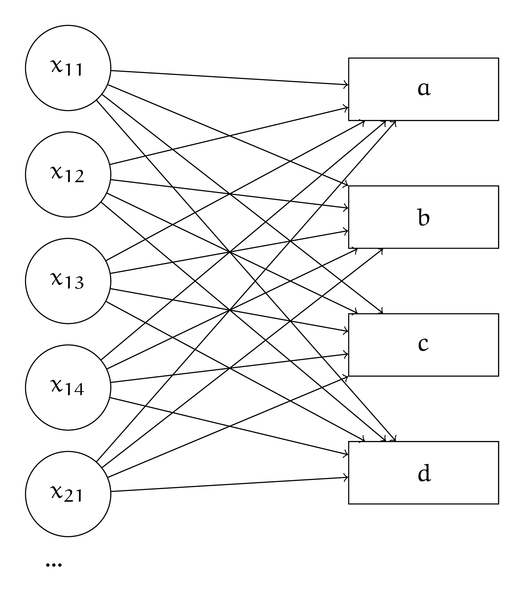
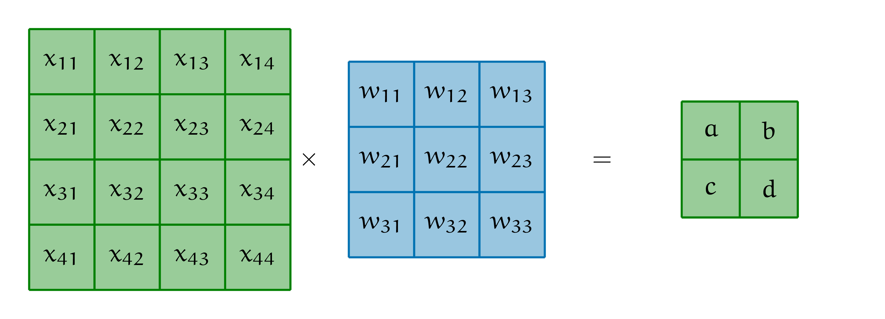
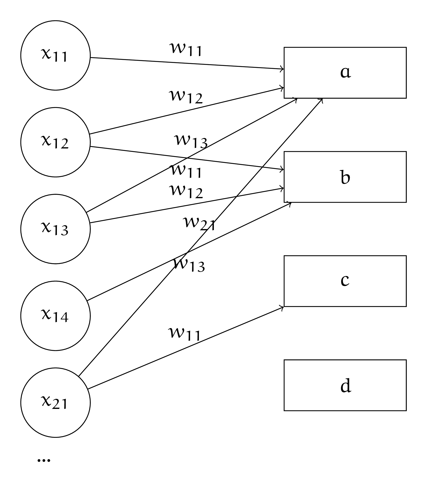
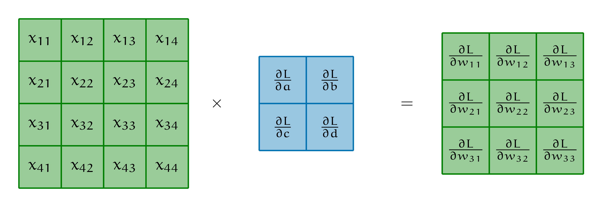

5. Свёрточный и полносвязный
5. Свёрточный и полносвязный#
Маше рассказали, что свёрточный слой — это полносвязный слой с некоторыми ограничениями. Она хочет разобраться, что это за ограничения. На вход в слой идёт чёрно-белое изображение размера \(4 \times 4.\) Каждый пиксель изображения — отдельная переменная.
{kind=link}
а) Нарисуйте с помощью кругляшей и стрелочек полносвязный слой, который обрабатывает картинку. Подпишите все веса. Нарисуйте свёрточный слой в таком же формате. На картинке часть связей исчезнет. Часть весов станут одинаковыми.
Решение
Нарисуем в виде кругляшей полносвязный слой. На вход идёт картинка размера \(4 \times 4\). Это означает, что у неё \(16\) пикселей. Каждый пиксель — отдельная переменная. Нарисуем первые пять пикселей.
{kind=link}
Каждый вход идёт в каждый из четырёх выходов со своим весом. Получается \(16 \cdot 4 = 64\) весов. Также мы будем обучать \(4\) свободных члена (константы) для каждого из нейронов скрытого слоя. Всего \(68\) параметров.
Нарисуем то же самое для свёрточного слоя. Попробуем наложить свёртку на картинку и посмотрим как формируются выходы из неё.
{kind=link}
Давайте выпишем все элементы результата применения свёртки
По аналогии
По аналогии
Ну и конечно же
Посмотрим внимательнее на расчёт пикселя \(a\). В нём фигурируют не все \(x_{ij}\). Получается, что если мы захотим записать расчёт \(a\) в полносвязном виде, часть связей в слое исчезнет. Например, от \(x_{11}\) останется только одна связь, которая ведёт к \(a\).
Более того, веса \(w_{lk}\) постоянно переиспользуются. Получается, что они будут одинаковыми у многих связей слоя.
{kind=link}
По аналогии можно нанести на каринку все оставшиеся связи. Получается, что свёрточный слой представляет из себя полносвязный слой с двумя ограничениями: мы выкидываем часть связей, а веса у каких-то определённых связей делаем одинаковыми. В свёртке мы используем \(9\) параметров. По аналогии с обычным нейроном, к свёртке можно добавить свободный член. Тогда параметров станет \(10\). В уравнении для каждого выхода появится дополнительный параметр \(w_0\)
б) Запишите свёрточный слой с помощью перемножения матриц в виде \(H = X \cdot W.\) Как выглядит матрица \(W\)?
Решение
В полносвязном слое \(H = X \cdot W\). У нас на вход идёт картинка
Давайте растянем её в вектор
Если у нас в выборке будет несколько картинок, мы сможем записать каждую из них в виде строчки в матрицу \(X\).
В матрице весов мы должны занулить все неиспользуемые веса, а также не забыть, что одни и те же веса дублируются в матрице несколько раз
При перемножении \(X\) и \(W\) мы получим уравнения для \(a,b,c,d\).
в) Как через свёрточный слой можно сделать шаг обратного распространения ошибки?
Решение
Точно также, как и через полносвязный. Только надо не забывать про то, что веса повторяются. Вес \(w_{11}\) в нашем случае фигугрирует в четырёх местах. Получается, что
Для остальных весов в градиентах также будет \(4\) слагаемых. Выпишем ещё три градиента и заметим забавный факт
Можно продолжить выписывать подобные уравнения и аккуратно закодить алгоритм обратного распространения ошибки. А можно заметить, что матрица из производных – это свёртка, которая бежит по нашей картинке. Каждая производная по весу, которую мы получаем – результат этой свёртки.
{kind=link}
Кроме производной по весам модели, для алгоритма обратного распространения ошибки, нам нужна производная по входам. Она, по аналогии, будет представлять из себя свёртку из производных. Попытайтесь понять, как именно она будет выглядеть.